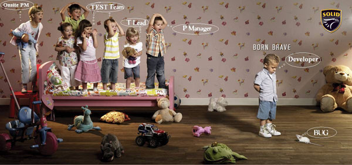

10. Comments explain "what" instead of "why"
Introductory programming courses teach students to comment frequently and early. Admittedly, this method is quite effective in the early stages of learning programming (even the simplest lines of code look like hieroglyphics). However, many programmers continue this habit even after growing from a little novice into a computer expert.
r = n / 2; // 让 r 等于 n 除以 2
// 当 r - (n/r) 大于 t 时进行循环
while ( abs( r - (n/r) ) > t ) {
r = 0.5 * ( r + (n/r) ); // 设置 r 等于 r + (n/r) 的一半
}
Did you understand what the code above means?
Four words: lost in a fog.
The problem above is that although there are many comments, they do not explain why the code was written. Below, the same code is shown with a different kind of comment, and the effect is vastly different.
// 使用牛顿-Raphson算法求n的平方根近似值
r = n / 2;
while ( abs( r - (n/r) ) > t ) {
r = 0.5 * ( r + (n/r) );
}
Much better, isn't it! Although we still don't fully understand what this code means, at least we've streamlined the code and it's much cleaner.
Comments are written to help readers understand the code. It is assumed here that everyone reading the code already has a basic understanding of how a for loop works. What they may not know is how your code works or why you chose this particular approach to implement it.
9. Various interruptions
In most cases, a programmer's mind is more like a train than a Ferrari; it needs time to get going. In other words, we need to warm up before we can get into the zone. But once we throw ourselves into the work, we can efficiently produce a lot of impressive code. Unfortunately, this state is very hard to achieve because our train of thought is constantly interrupted by clients and colleagues.
8. Scope creep
Wikipedia defines scope creep as "uncontrolled changes to the project scope." Scope creep can turn a relatively simple request into an extremely complex and time-consuming task. It uses seemingly convenient and harmless requirements to expand the scope, destroying the project schedule step by step:
- Version 1: Show a map of the current location
- Version 2: Show a 3D map of the current location
- Version 3: Show a 3D map of the current location, accurate enough to be used as flight navigation
7. Management doesn't understand programming
Of course, there are exceptions. This heading is just a personal experience; any resemblance is purely coincidental.
First, we must admit that management is not an easy job. Your subordinates will resent you: their fragile feelings sometimes get hurt. And keeping a large group of people united and cohesive is a task as heavy as a mountain. However, the difficulty of the task does not mean managers can get away with not having a basic understanding of their subordinates. When management fails to grasp the concept of the work, it leads to issues such as scope creep, missed deadlines, frustration, and low morale among employees. This is the root cause of many programmers' everyday complaints and anxieties.
6. Writing documentation
Sure, there are many documentation generation tools, but my experience tells me that these tools are only suitable for generating API documentation for other programmers to reference. If the software you develop will be used by many people in their daily lives, then you'd better write documentation that even laypeople can understand (e.g., how the application works, troubleshooting guides, etc.).
Well, some programmers aren't willing to do it. What people often do is quickly browse open-source projects and then keep searching for documentation to get help.
I can guarantee that wherever you are, when almost every programmer is asked to write documentation, they will say: "Can't someone else write it?"
5. Programs lacking documentation
Well, I've never said that programmers are people who say one thing and do another. Programmers are often required to use third-party libraries and applications in projects. This makes documentation a necessity. But as I said in the previous item, programmers hate writing documentation. What a contradiction and a dilemma!
When we need to use a third-party library but have no idea what at least half of the APIs are for, nothing is more maddening. Do you know the difference between the functions poorlyNamedFunctionA() and poorlyButSimilarlyNamedFunctionB()? Do I need to do a null test before accessing PropertyX? If the documentation is missing, I guess I'll have to find out through my own tests and error reports. Oh my god!
4. Hardware (always being mistaken for a computer repair guy)
Any programmer who is called in to debug a strange crash on a database server, or to solve a problem where RAID drives aren't working properly, only to find out in the end that the cause is hardware, would be extremely pained (orz). By the way, I don't know where this misunderstanding comes from, but people actually think that programmers, who fiddle around with computers all day, must know how to fix computers. Well, some programmers do know how (maybe a skill they developed in college to pick up girls?), but I bet that most programmers don't know, or don't care at all about how a program works after being compiled into machine code.
What do we care about? We care about whether what we produce meets the requirements, so that we can focus on solving higher-level tasks.
3. Vagueness
"Oh no, my website is broken," "Feature XX isn't working properly" — these unclear, non-specific requests are the most painful. I'm particularly amazed that when we ask non-programmers to reproduce the problem, they actually get angry. Don't they know that we can't start working with just a simple "The computer is broken, fix it quickly"? We need more information.
In most cases, software operation is traceable. We like it that way. Please accommodate us and help us find out at which step the problem occurs, rather than a simple "fix it."
2. Getting along with other programmers
Programmers often don't get along with other programmers. Don't act so surprised; deep down you've already admitted it, dear programmers. I can rattle off ten examples on this topic off the top of my head, or even write a separate blog post, so in this article I'll just list a few common reasons why it's hard to get along well with colleagues:
Irritable temper, unfriendly attitude.
Not knowing when to discuss system architecture and when to start working.
Inability to communicate effectively, using jargon that is easily misunderstood.
Not managing their own work properly.
Lack of interest in the codebase and the project.
This isn't even the worst. There's also a heavyweight "programmer killer" — No. 1 is yet to come later...
1. Looking at your own code 6 months later
Don't sneeze — I found a bug.
Have you ever looked back at code you wrote before and couldn't help beating your chest and stamping your feet? Have you ever lamented why you were such an idiot back then, writing this kind of crap! Delete it, delete it, delete it all!
Well, you can be happy that this kind of thing doesn't only happen to you.
Our programming world is constantly changing. What is the best technology today may become outdated tomorrow. We can never write perfect code, because the standards of evaluation also keep rising with the progress of the times. No matter how perfect our code may seem now, it is very likely to become an object of ridicule in the near future.
This is indeed inevitably frustrating, because no matter how hard we try to learn the latest and greatest development tools, designs, frameworks, and development methodologies, we are always one step behind the latest technology trends. For me, this is the most vexing thing about being a programmer — bar none. That's why I've ranked it No. 1. All we can do is keep updating our skills, but sometimes I feel like a sand sculptor, constantly knocking down and redoing the work. Heh.
Click me to share notes
<p style="font-size:14px;">The note must be an extension of the content of this article!</p><br> <p style="font-size:12px;"><a href="../tougao.html" target="_blank">Article submission, click here</a></p> <p style="font-size:14px;"><a href="./runoob-user-test-intro.html" target="_blank">How to get a registration invitation code</a></p> <h3 class="text-muted"><i class="fa fa-info-circle" aria-hidden="true"></i> Before sharing a note, you must <a href=".." class="runoob-pop">log in</a>!</h3> <p><a href="./runoob-user-test-intro.html" target="_blank">How to get a registration invitation code</a></p>